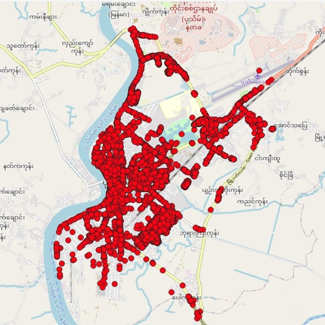
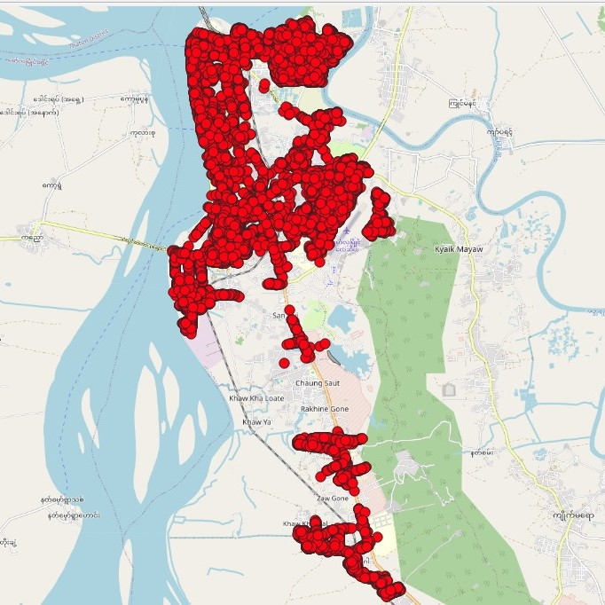

Vendor POI Collection
Project Description
I managed the POI collection process in Pathein and Mawlamyine to support Grab Food's expansion. Remotely managing a team of seven promoters, I ensured they met daily and weekly collection targets. Over three months, we collected more than 36,000 POIs, and my role included overseeing data cleaning, quality control, and weekly database injections. This vendor-driven approach (where vendors are tasked with gathering and verifying location data) significantly expanded our POI database. The process involved assigning specific areas to vendors, their data collection (including photos, coordinates, and details), data submission, quality checks, and database ingestion. The expanded POI data improves user experience by providing more comprehensive location information, facilitating more accurate navigation, better destination discovery, and enhanced service delivery.
Objectives
The vendor POI collection project was strategically implemented to achieve the following:
- Expanded POI Coverage: Increase the number of POIs in Grab's database to provide more comprehensive location information.
- Enhanced User Experience: Improve navigation, destination discovery, and overall service delivery for Grab users.
- Increased Business Performance: Drive growth in bookings and revenue across Grab services.
- Improved Customer Satisfaction: Boost customer satisfaction through more accurate and convenient location-based services.
POI Coverage in Pathein (12043) and Mawlamyine (23772)

